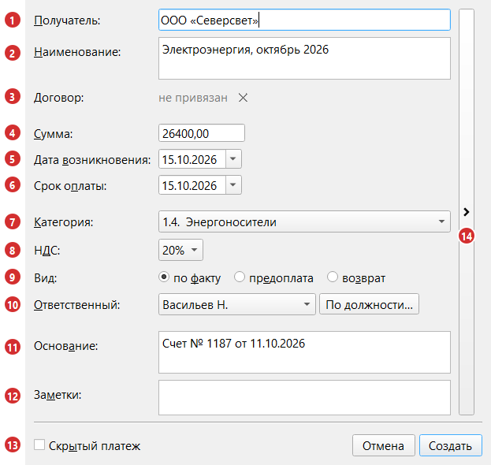
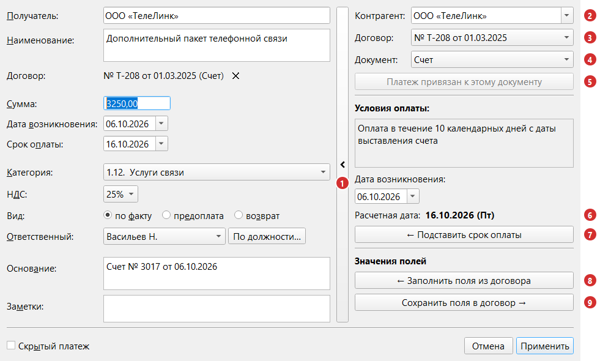
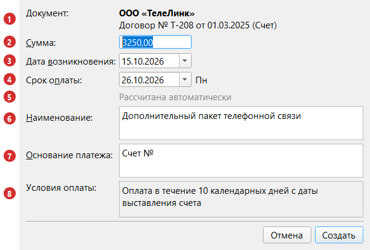

Раздел 3. Создание и редактирование платежа |
Платеж — основная запись программы: что, кому, сколько и к какому сроку нужно заплатить (см. раздел 1). Оплаты вносятся отдельно (раздел 4).
Как открыть окно платежа |
Команды — на панели инструментов и в контекстном меню таблицы; когда они доступны, см. раздел 2.
| Что нужно сделать | Команда | Горячая клавиша |
|---|---|---|
| Создать новый платеж | «Новый платеж» | Ctrl+N |
| Создать платеж на основе выбранного | «Копировать платеж» | Ctrl+D |
| Создать платеж на основе выбранного по тому же документу договора | «Копировать платеж с новым основанием» | Ctrl+Shift+D |
| Изменить выбранный платеж | «Редактировать платеж» | F2 или двойной щелчок по строке |
| Удалить выбранный платеж | «Удалить платеж» | Del |
Окно платежа |
Для нового платежа и копии окно называется «Новый платеж» (кнопка «Создать»), для существующего — «Редактирование платежа» (кнопка «Применить»).

Рис. 10. Окно нового платежа.
| № | Поле | Что вводить |
|---|---|---|
| 1 | Получатель | Кому платим. Обязательное поле. Обычный текст, не связанный со списком контрагентов; подсказки — из прежних платежей (по любому фрагменту названия) |
| 2 | Наименование | За что платим. Обязательное поле; подсказки из прежних платежей |
| 3 | Договор | Привязка к документу договора; ✕ отвязывает. Привязывается в панели договора (выноска 14), см. «Панель договора». Длинные названия договора и документа сокращаются до 30 знаков с «…» |
| 4 | Сумма | Полная сумма платежа с копейками, больше нуля. Для платежа-возврата тоже вводится положительное число (см. «Виды платежа») |
| 5 | Дата возникновения | Дата события, от которого считается срок (например, дата счёта); по умолчанию сегодня |
| 6 | Срок оплаты | К какому дню заплатить; по умолчанию сегодня |
| 7 | Категория | Статья расходов. Для «Финансовой деятельности» нужно выбрать «Подкатегорию»: «Погашение кредита», «Погашение лизинга», «Погашение процентов» или «Погашение займов учредителям» |
| 8 | НДС | «нет», «10%», «20%» или «25%». Подставляется при выборе категории (зарплата — «нет», расходные материалы — 10%, услуги связи — 25%, большинство остальных — 20%), можно изменить |
| 9 | Вид | «по факту» (по умолчанию), «предоплата» или «возврат» |
| 10 | Ответственный | Обязательное поле. Список или «По должности…» (подставляется сотрудник, занимающий должность) |
| 11 | Основание | Документ, например «Счет № 1187 от 11.10.2026» |
| 12 | Заметки | Ваш текст; виден в панели сведений (раздел 2) |
| 13 | Скрытый платеж | Отметка для экспорта (раздел 10) |
| 14 | Кнопка со стрелкой | Боковая панель договора |
Автоподстановки:
Если поле заполнено неверно. После «Создать» или «Применить» программа покажет сообщение, поставит курсор в проблемное поле и обведёт его красной рамкой (если дата возникновения позже срока оплаты, обводятся оба поля с датами). Рамка пропадает, как только вы измените значение в поле.
Виды платежа |
Поле «Вид» (9); подробнее — в разделе 1.
| Вид | Как работает |
|---|---|
| по факту | Обычный платеж |
| предоплата | Пометка в столбце «Вид платежа» |
| возврат | Деньги вернулись вам. Вводите положительную сумму: она запишется со знаком «минус», и сразу внесётся оплата на всю сумму датой «Срок оплаты» (не в будущем) |
Платеж-возврат нельзя редактировать, оплаты по нему нельзя вносить и удалять. Ошиблись — удалите возврат и создайте заново.
|
⚠️ Внимание. При редактировании вид «возврат» выбрать нельзя: оплата возврата создаётся только вместе с платежом. Создайте новый платеж с видом «возврат». Если вам вернули только часть оплаты, внесите оплату со знаком «минус» (раздел 4). |
Редактирование платежа |
Правила те же, что при создании.
Панель договора |
Кнопка со стрелкой (14 на рис. 10) открывает панель привязки платежа к документу договора; состояние панели запоминается.

Рис. 11. Окно «Редактирование платежа» с панелью договора.
| № | Что это | Для чего |
|---|---|---|
| 1 | Кнопка со стрелкой | Открывает и закрывает панель |
| 2–4 | «Контрагент», «Договор», «Документ» | Выбор документа по цепочке «контрагент → договор → документ» (раздел 1) |
| 5 | «Привязать к документу» | Привязывает платеж к выбранному документу. Если платеж уже привязан к нему, кнопка называется «Платеж привязан к этому документу» и неактивна |
| 6 | «Расчетная дата» | Срок оплаты по условиям документа (раздел 7) |
| 7 | «← Подставить срок оплаты» | Переносит расчетную дату в «Срок оплаты»; только если платеж привязан к этому документу |
| 8 | «← Заполнить поля из договора» | Подставляет в платеж поля, которые раньше сохранили для этого документа |
| 9 | «Сохранить поля в договор →» | Запоминает для документа получателя, наименование, категорию, НДС, вид, основание, ответственного и «Скрытый платеж» |
В панели есть два подзаголовка: «Условия оплаты:» (текст условий из документа, только для чтения) и «Значения полей» (над кнопками 8 и 9).
Привязка сохраняется вместе с платежом. Подробнее — в разделах 6 и 7.
Копирование платежа |
Ctrl+D открывает окно «Новый платеж», заполненное данными выбранного платежа. Что переносится:
| Переносится | Не переносится |
|---|---|
| Получатель, наименование, сумма, срок оплаты, категория и подкатегория, НДС, вид, ответственный, основание, заметки, отметка «Скрытый платеж», привязка к документу договора | Оплаты (у копии их нет, остаток равен сумме), отметка «На контроле», дата возникновения (ставится сегодняшняя) |
Если копируемый платеж оплачен, после создания копии включается пункт «Все неоплаченные», чтобы копия была видна.
|
⚠️ Внимание. Если вы копируете платеж-возврат, сумма в окне окажется равной нулю, а вид останется «возврат». Введите сумму заново. |
Копирование платежа с новым основанием |
Для регулярных платежей по одному документу договора (например, ежемесячный счёт): копия остаётся привязанной к документу, а в небольшом окне вводится только изменяющееся.
Команда доступна, если платеж привязан к документу договора и не является возвратом. Ctrl+Shift+D, меню кнопки «Копия» или контекстное меню.

Рис. 12. Окно «Копирование платежа с новым основанием».
| № | Поле | Что показывает или что вводить |
|---|---|---|
| 1 | Документ | Контрагент, договор и документ; не меняются |
| 2 | Сумма | Сначала — сумма копируемого платежа |
| 3 | Дата возникновения | Дата события (счёта, акта); сначала сегодня |
| 4 | Срок оплаты | Рассчитывается по условиям документа и дате возникновения |
| 5 | Подсказка под сроком оплаты | «Рассчитана автоматически»; «Укажите вручную» — срок посчитать нельзя; «Расчетная: … · вернуть» — срок изменён вручную, «вернуть» возвращает рассчитанную дату |
| 6 | Наименование | Сначала — наименование копируемого платежа |
| 7 | Основание платежа | Сначала — общая часть прежних оснований, например «Акт №»: допишите номер и дату |
| 8 | Условия оплаты | Из документа, только для чтения |
Если для документа срок считается от отчетного месяца (например, «не позднее 25 числа следующего месяца»), в окне добавляется «Отчетный месяц»; пока вы его не меняете, берётся месяц даты возникновения (раздел 7).
Остальное копируется без изменений; «На контроле» и оплаты не переносятся.
Удаление платежа |
Del; программа спросит: «Удаление платежа - необратимое действие. Уверены, что хотите продолжить?». Вместе с платежом удаляются все оплаты по нему (вся история оплат) и его заметки. Контрагент, договор и документ, к которому платеж был привязан, остаются в окне «Контрагенты и договоры».
|
⚠️ Внимание. Отменить удаление нельзя, корзины нет. Остаётся создать платеж заново или восстановить резервную копию (раздел 13), но тогда пропадёт всё, что внесено после её создания. |
Если что-то пошло не так |
| Что вы видите | Что случилось | Что делать |
|---|---|---|
| Сообщение «Выбранный платеж больше не отображается в таблице - вероятно, изменились условия фильтрации. Выберите платеж заново.» | Платеж скрыт фильтром или поиском | Сбросьте фильтры (Ctrl+R), выберите платеж и повторите команду |
| Сообщение «Не удалось получить список ответственных (подробности см. в логе). Проверьте настройки и файл персонала.» | Не загрузился список сотрудников, окно не открывается | Проверьте «Настройки» → «Персонал» и перезапустите программу |
| Сообщение «На эту должность сейчас никто не назначен. Выберите ответственного вручную.» | В меню «По должности…» выбрана должность, на которой никого нет | Выберите сотрудника из списка |
| Сообщение «Работник, занимающий эту должность, отсутствует в текущем списке ответственных.» | Сотрудник на этой должности есть, но его нет в списке ответственных (например, он в архиве) | Выберите другого сотрудника или проверьте список в «Настройки» → «Персонал» |
| Сообщение «Не удалось удалить платеж (подробности см. в логе)» | Ошибка при удалении, платеж остался в таблице | Повторите попытку, при повторе перезапустите программу |
| Сообщение «Не удалось сохранить платеж (подробности см. в логе)» или «Не удалось сохранить изменения (подробности см. в логе)» | Платеж не записался в базу (при создании, копировании или правке), окно осталось открытым | Повторите «Сохранить»; при повторе перезапустите программу и приложите журнал работы (приложение 4) |
| Сообщение «Новая общая сумма платежа превышает сумму уже сделанных по нему оплат» | При редактировании: оплачено больше, чем новая сумма платежа. Платеж не сохраняется | Введите сумму не меньше оплаченной или сначала удалите лишнюю оплату (раздел 4) |
| Сообщение «Дата возврата не может быть больше сегодняшней даты» | У платежа вида «возврат» срок оплаты в будущем | Укажите в «Срок оплаты» дату не позже сегодняшней |
| Вопрос «Срок оплаты меньше текущей даты. … Вы уверены, что хотите продолжить?». К нему может добавиться «Основание платежа не указано.» | Срок оплаты в прошлом или пустое «Основание». Для возврата, а также при правке и копировании уже оплаченного платежа вопроса о сроке нет; в окне «Копирование платежа с новым основанием» он задаётся всегда | «Да» сохраняет платеж как есть, «Отмена» возвращает в окно. Основание лучше заполнить: поиск (раздел 5) ищет по нему |
| Вопрос «Платеж с таким основанием по этому документу уже есть. … Вы уверены, что хотите продолжить?» | Окно «Копирование платежа с новым основанием»: основание совпало (без учёта регистра) с другим платежом по этому документу | Если это не повторный платеж, «Отмена» и поправьте номер или дату в основании |
| Кнопка «← Подставить срок оплаты» неактивна | Платеж не привязан к документу, выбранному в панели договора, или у документа нет расчетной даты | Привяжите платеж к выбранному документу или выберите тот, к которому он привязан (раздел 6) |
| Сообщение «Для этого договора ранее не сохранялись значения» при нажатии «← Заполнить поля из договора» | Для документа ещё ни разу не нажимали «Сохранить поля в договор →» | Заполните поля вручную; при желании сохраните их кнопкой «Сохранить поля в договор →» |
| Команда «Копировать платеж с новым основанием» недоступна | Платеж не привязан к документу договора или это возврат | Привяжите платеж к документу (раздел 6) или используйте «Копировать платеж» |
| Команда «Редактировать платеж» недоступна | Это платеж-возврат | Удалите платеж и создайте заново |